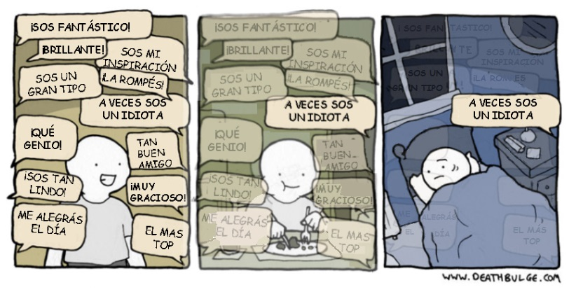
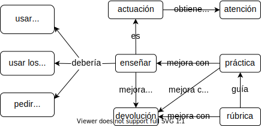

9 Enseñar como un arte performativo
Estás leyendo la segunda edición en progreso y en castellano de Enseñar Tecnología en Comunidad (Teaching Tech Together). Este capítulo está siendo objeto de una profunda reestructuración y puede resultar confuso o incompleto
En Darwin entre las máquinas, George Dyson escribió, “En el juego de la vida y la evolución hay tres jugadores en la mesa: las personas, la naturaleza y las máquinas. Estoy firmemente del lado de la naturaleza. Pero la naturaleza, sospecho, está del lado de las máquinas…” De manera similar, ahora hay tres jugadores en el juego de la educación: los libros de texto y otros materiales de lectura, las clases en vivo, y las clases en línea automatizadas. Podrías darle a tus estudiantes clases escritas y alguna combinación de videos grabados y ejercicios para que realicen a su propio ritmo, pero si vas a enseñar en persona tienes que ofrecer algo diferente (y con suerte mejor que) cualquiera de los anteriores. Por lo tanto, este capítulo se enfoca en cómo enseñar a programar programando.
9.1 Programar en vivo
La enseñanza es teatro, no cine.
— Neal Davis
La manera más efectiva de enseñar a programar es programando en vivo Rubin (2013),Haaranen (2017),Raj et al. (2018). En vez de presentar material previamente escrito, quien enseña escribe el código en frente de la clase mientras que los/las estudiantes lo siguen a la par, escribiendo y ejecutando el código a medida que avanzan. Programar en vivo funciona mejor que las presentaciones por varias razones:
Permite la enseñanza activa al facilitar a quienes están enseñando responder a los intereses y preguntas de los/las estudiantes en el momento. Una presentación de diapositivas es como una vía de ferrocarril: podrá ser un viaje suave, pero tienes que decidir hacia dónde vas con anticipación. Programar en vivo es como manejar un vehículo todo terreno: podrá ser más accidentado, pero es mucho más fácil cambiar de dirección e ir hacia donde la gente quiere.
Mirar cómo se va escribiendo un programa es más motivador que mirar a alguien pasar diapositivas.
Facilita la transferencia involuntaria de conocimiento: las personas aprenden más de lo que enseñamos conscientemente al observar cómo hacemos las cosas.
Disminuye la velocidad de la persona que está enseñando: si tiene que escribir el programa a medida que avanza, entonces solo puede ir el doble de rápido que sus estudiantes, en vez de 10 veces más rápido como haría usando diapositivas.
Ayuda a reducir la carga en la memoria de corto plazo porque hace que quien esté enseñando sea más consciente de cuánto le está mostrando a sus estudiantes.
Los/las estudiantes pueden ver cómo diagnosticar y corregir errores. Van a dedicar mucho tiempo a esta tarea; a menos que puedan tipear de manera perfecta, programar en vivo asegura que puedan ver cómo resolver los errores de programación.
Ver a quienes enseñan cometer errores muestra a los/las estudiantes que está bien que cometan errores. Si el/la docente no se avergüenza al cometer errores y habla sobre ellos, sus estudiantes también se sentirán más cómodos/as haciéndolo.
Otro beneficio de la programación en vivo es que demuestra el orden en que se deben escribir los programas. Cuando Ihantola and Karavirta (2011) observaron cómo las personas resuelven problemas de Parson, encontraron que quienes tienen experiencia programando usualmente ubican la identificación del método al principio, luego agregan la mayor parte del control de flujo (es decir, bucles y condiciones), y solo después de eso, agregan detalles como la inicialización de variables y el manejo de casos especiales. Este método “fuera de orden” es ajeno para las personas novatas, que leen y escriben código en el orden en que se presenta en la página; ver el código les ayuda a descomponer los problemas en sub-metas que pueden abordar una a la vez. La programación en vivo además les da a quienes están enseñando la chance de enfatizar la importancia de los pequeños pasos con comentarios frecuentes Blikstein et al. (2014) y la importancia de definir un plan en vez de hacer cambios más o menos aleatorios y esperar que las cosas mejoren Spohrer, Soloway, and Pope (1985).
Sentirse cómodo/a al hablar mientras se escribe código en frente de un público requiere práctica, pero la mayoría de las personas indican que rápidamente se vuelve igual de difícil que hablar con una presentación de diapositivas. Las secciones que siguen ofrecen consejos sobre cómo mejorar la manera de programar en vivo.
9.1.1 Aprovecha tus errores
Los errores de tipeo son la pedagogía.
— Emily Jane McTavish
La regla más importante de la programación en vivo es aprovechar tus errores. No importa qué tan bien te prepares, cometerás algunos errores; cuando lo hagas, piensa sobre ellos con tu público. Si bien obtener datos es difícil, los/las programadores/as profesionales dedican del 25% al 60% de su tiempo identificando y resolviendo errores; las personas novatas le dedican mucho más (Section 8.6). A pesar de ello, la mayoría de los libros de texto y tutoriales dedican poco tiempo a diagnosticar y corregir problemas. Si hablas en voz alta mientras intentas identificar qué escribiste mal o dónde tomaste el camino equivocado, y explicas cómo lo corriges, les darás a tus estudiantes un conjunto de herramientas que pueden usar cuando comentan sus propios errores.
9.1.2 Tropiezos deliberados
Una vez que hayas enseñado una lección varias veces, es poco probable que cometas nada más que errores básicos de tipeo (que de todas maneras pueden ser informativos). Puedes intentar recordar errores pasados y cometerlos deliberadamente, pero usualmente eso se siente forzado. Un enfoque alternativo es sacudir la programación: pide a tus estudiantes, en turnos, que te indiquen qué escribir a continuación. Esto prácticamente garantiza que te encuentres en algún tipo de problema.
9.1.3 Pregunta por predicciones
Una manera de mantener la motivación de tus estudiantes mientras estás programando en vivo es pedirles que hagan predicciones sobre qué hará el código que ven en la pantalla. Luego, puedes escribir las primeras sugerencias que hagan, hacer que toda la clase vote sobre cuál piensan que es la opción más probable, y finalmente ejecutar el código. Esta es una forma simple de instrucción por pares, que discutiremos en la Section 10.2. Además de mantener su atención en la actividad, les permite practicar cómo razonar sobre el comportamiento del código.
9.1.4 Tómalo con calma
Cada vez que escribas un comando, agregues una línea de código a un programa o selecciones un elemento de un menú, di qué estas haciendo en voz alta. Luego señala lo que haz hecho y su resultado en la pantalla y repásalo una segunda vez. Así tus estudiantes podrán ponerse al día y revisar si lo que acaban de hacer es correcto. Esto es particularmente importante cuando algunos/as de tus estudiantes tienen dificultades para ver o escuchar, o no dominan el idioma en el que estás enseñando.
Hagas lo que hagas, no copies y pegues código: hacer eso prácticamente garantiza que irás mucho más rápido que tus estudiantes. Y si usas la tecla Tab para autocompletar lo que estás escribiendo, dilo en voz alta para que tus estudiantes entiendan qué estás haciendo, como en el siguiente ejemplo para el lenguage Python: “Usemos turtle punto r'i’ y Tab para completar con `right’.”
Si la salida de tu comando o código hace que lo que acabas de escribir desaparezca de la vista, vuelve arriba para que tus estudiantes puedan verlo de nuevo. Si eso no es posible, ejecuta el mismo comando una segunda vez o copia y pega el último comando o comandos en las notas compartidas del taller.
9.1.5 Visible y con voz clara
Cuando te sientas, es más probable que mires tu pantalla en vez de mirar a tu público y puedes quedar fuera de la vista de tus estudiantes en las últimas filas del aula. Si eres físicamente capaz de pararte durante un par de horas, debes hacerlo mientras enseñas. Planifícalo y asegúrate de tener una mesa elevada, un escritorio de pie, o un atril para tu computadora portátil para que no tengas que inclinarte al escribir.
Independientemente de si estás de pie o sentado/a, asegúrate de moverte lo más que puedas: acércate a la pantalla para señalar algo, dibuja algo en la pizarra, o simplemente aléjate de la computadora por un momento y háblale directamente a tu público. Hacer esto aleja la atención de tus estudiantes de sus pantallas y les proporciona un momento natural para hacer preguntas.
Si vas a enseñar por más de un par de horas, vale la pena usar un micrófono incluso si la habitación es pequeña. Tu garganta se cansa tanto como cualquier otra parte de tu cuerpo; usar un micrófono no es diferente de usar zapatos cómodos (algo que también deberías usar). También puede marcar una gran diferencia para las personas que tienen discapacidad auditiva.
9.1.6 Emula la pantalla de tu estudiante
Es posible que hayas personalizado tu entorno de trabajo con una terminal de Unix elegante, un esquema de colores personalizado o una gran cantidad de atajos de teclado. Tus estudiantes no tendrán nada de eso, así que intenta crear un entorno de trabajo que refleje lo que sí tienen. Algunos/as docentes crean un usuario distinto con configuración básica en sus computadoras o una cuenta específica para enseñar si están usando algún servicio online como Scratch o GitHub. Hacer esto también puede ayudar a evitar que los paquetes que instalaste ayer para trabajar rompan la lección que se supone que enseñes hoy.
9.1.7 Usa la pantalla de manera sabia
Por lo general, necesitarás agrandar el tamaño de la letra considerablemente para que las personas en el fondo de la sala puedan leer. Esto significa que podrás colocar muchas menos cosas en la pantalla de las que estás acostumbrado/a. En muchos casos, se reducirá a 60–70 columnas y 20–30 filas, por lo que estarás usando una super computadora del siglo XXI como si fuera una sencilla terminal de principios de la década de 1980.
Para organizarte, maximiza la ventana que estás usando para enseñar y luego pregúntale a todos si pueden leer lo que está en la pantalla o no. Usa una fuente de color negro sobre un fondo ligeramente coloreado en vez de una fuente de color claro sobre un fondo oscuro—el tono claro deslumbrará menos que el blanco puro.
Presta atención a la iluminación de la sala: no debe estar completamente a oscuras y no debe haber luces directamente o por encima de la pantalla de protección. Dedica algunos minutos para que tus estudiantes puedan reacomodar sus mesas para ver con claridad.
Cuando la parte inferior de la proyección de la pantalla está a la misma altura que las cabezas de tus estudiantes, las personas en el fondo no podrán ver lo que ocurre en esa sección de la pantalla. Puedes elevar la parte inferior de la ventana para compensar esto, pero eso generará que tengas aún menos espacio para escribir.
Si puedes acceder a un segundo proyector y pantalla, úsalos: el espacio adicional te permitirá mostrar el código de un lado y su resultado o comportamiento del otro lado. Si la segunda pantalla requiere su propia computadora, pídele a un docente auxiliar que la controle en lugar de ir y venir entre los dos teclados.
Finalmente, si estás enseñando algo como la terminal de Unix en una consola, es importante decirle a las personas cuándo estás usando un editor de texto en la consola y cuándo regresas a la consola propiamente dicha. La mayoría de las personas novatas no han visto nunca a una ventana asumir múltiples personalidades de esta manera y pueden confundirse rápidamente cuando estás interactuando en la terminal, cuando estás escribiendo en un editor de texto, y cuando estás trabajando de manera interactiva con Python u otro lenguaje. Puedes evitar este problema usando ventanas separadas para el editor de texto; si haces esto, siempre avisa a tus estudiantes al cambiar de una ventana a la otra.
9.1.8 Las herramientas de accesibilidad ayudan a todas las personas
Las herramientas como [Mouseposé][mousepose] (para Mac) y [PointerFocus][pointerfocus] (para Windows) resaltan la posición del cursor del mouse en la pantalla, y las herramientas de grabación de pantalla como [Camtasia][camtasia] y aplicaciones independientes como [KeyCastr][keycastr] muestran teclas invisibles como Tab y Control-J a medida que las usas. Esto puede ser un poco molesto al comienzo, pero ayuda a tus estudiantes a descubrir lo que estás haciendo.
9.1.9 Dos dispositivos
Algunas personas usan dos dispositivos cuando enseñan: una computadora portátil conectada al proyector que sus estudiantes ven y una tableta para que puedan ver sus propias notas y las notas que los/las estudiantes están tomando (Section 10.7). Esto es más confiable que pasar de un escritorio virtual al otro, aunque imprimir la lección sigue siendo la tecnología de respaldo más confiable.
9.1.10 Dibuja temprano, dibuja seguido
Los diagramas son siempre una buena idea. A veces tengo una presentación de diapositivas llena de diagramas preparada de antemano, pero construir los diagramas paso a paso ayuda a retenerlos más (Section 5.1) y te permite improvisar.
9.1.11 Evita las distracciones
Desactiva las notificaciones que usas en tu computadora, especialmente las de redes sociales. Ver mensajes parpadeando en la pantalla te distrae a tí y a tus estudiantes, y puede ser incómodo si aparece un mensaje que no te gustaría que otras personas vean. De nuevo, es posible que quieras crear una segunda cuenta en tu computadora que no tenga correo electrónico u otras herramientas configuradas.
9.1.12 Improvisa—luego de haber aprendido el material
No te alejes de la lección que planificaste o pediste prestada la primera vez que la enseñes. Puede ser tentador desviarse del material porque te gustaría mostrar un lindo truco o demostrar otra manera de hacer algo, pero existe la posibilidad de que te encuentres con algo inesperado que te lleve más tiempo del que tienes.
Sin embargo, una vez que el material te resulte más familiar, puedes y debes comenzar a improvisar en base a los antecedentes de tus estudiantes, sus preguntas durante la clase, y lo que personalmente te parezca más interesante. Esto es como tocar una nueva canción: sigues la partitura las primeras veces, pero después de que te sientes cómodo/a con los cambios de melodía y acordes, puedes comenzar a ponerle tu propio sello.
Cuando quieras usar algo nuevo, revísalo de antemano usando la misma computadora que usarás cuando des la clase: instalar cientos de megabytes de programas a través del WiFi de la escuela secundaria en frente de jóvenes de 16 años aburridos/as no es algo por lo que alguna vez quieras pasar.
9.1.13 Enseñanza directa
La enseñanza directa es un método de enseñanza centrado en el diseño meticuloso del plan de estudio dictado usando un guíon predefinido. Es más como un actor recitando líneas que como el enfoque de improvisación que recomendamos. Stockard et al. (2018) encontró que la enseñanza directa tiene un efecto estadísticamente significativo positivo a pesar de que a veces pueda ser muy repetitivo. Yo prefiero improvisar porque la enseñanza directa requiere más preparación inicial que lo que la mayoría de los grupos de estudiantes free-range pueden permitirse.
9.1.14 Mira a la pantalla—de vez en cuando
Está bien mirar la pantalla donde estás proyectando ocasionalmente cuando estás mostrando una sección de código o dibujando un esquema: no mirar a la sala llena de personas que te están mirando puede ayudarte a reducir tu nivel de ansiedad y darte un momento para pensar qué decir a continuación.
Sin embargo, no deberías hacerlo por más de unos segundos. Una buena regla general es tratar a la pantalla como a uno/a de tus estudiantes: si mirar a una persona durante el tiempo que miras a la pantalla te resulta incómodo, es hora de darte la vuelta y mirar a la clase nuevamente.
9.1.15 Inconvenientes
Programar en vivo tiene algunos inconvenientes, pero pueden evitarse o solucionarse con un poco de práctica. Si descubres que estás cometiendo demasiados errores de tipeo, reserva 5 minutos por día para practicar escribir con el teclado: también te ayudará en tu trabajo diario. Si crees que dependes demasiado de las notas de la clase, divídelas en partes más pequeñas para que solo tengas que pensar en un pequeño paso a la vez.
Y si sientes que estás pasando demasiado tiempo escribiendo código para importar librerías, encabezados de clases y código repetitivo, genera un esqueleto de código para que tú y tus estudiantes usen como punto de partida (Section 10.9). Hacer esto también reducirá su carga cognitiva, dado que centrarán su atención donde tú quieras.
9.2 Estudiar la lección
Desde políticos/as hasta investigadores/as y docentes, quienes reforman la educación han diseñado sistemas para encontrar y apoyar a personas que pueden enseñar bien y eliminar a las personas que no lo hacen. Pero la suposición de que algunas personas nacen como docentes es errónea: en cambio, como cualquier otra representación artística, las claves para enseñar mejor son práctica y colaboración. Como explica Green (2014), en japonés este enfoque se llama jugyokenkyu, que significa “estudiar la lección”:
Para graduarse, los/las especialistas en educación [de Japón] no solo tenían que ver como trabajaba el/la docente que le asignaban, tenían que reemplazarlo/a efectivamente, participando en su aula primero como observadores/as y luego, a la tercera semana, como una aproximación…titubeante del propio/a docente. Funcionó como una especie de relevo de docentes. Cada estudiante eligió una asignatura, preparando clases para cinco días… [y luego] cada uno/a enseñó un día. Para pasar la batuta, tenía que enseñar una clase de un día en cada asignatura: la que tenían planeada y las cuatro que no… y tenían que hacerlo delante de su docente. Después, todas las personas—el/la docente, los/las estudiantes para ser docentes, y a veces, incluso un/a observador/a externo—se sentaban alrededor de una mesa para hablar sobre lo que observaron.
Poner el trabajo bajo un microscopio para mejorarlo es común en áreas tan diversas como la [fabricación][deming-edwards] y la música. Un/a músico/a profesional, por ejemplo, analizará media docena de grabaciones de “Body and Soul” o “Smells Like Teen Spirit” antes de interpretarlas. También recibirán comentarios de colegas músicos/as durante la práctica y después de las actuaciones.
Pero la retroalimentación continua no es parte de la cultura de la enseñanza en la mayoría de los países de habla inglesa. Allí, lo que sucede en el aula se queda en el aula: quienes enseñan no miran las clases de sus colegas de manera regular, por lo que no pueden tomar prestadas las buenas ideas de las demás personas. Los/as docentes podrán acceder a los planes de clases y tareas de sus colegas, la junta escolar o una editorial de libros de texto, o revisar cursos masivos abiertos en línea, pero cada persona tiene que descubrir cómo dar las clases específicas en aulas específicas para estudiantes específicos/as. Esto es particularmente cierto para personas voluntarias y docentes free-range que participan en talleres y actividades fuera de la escuela.
Desarrollar nuevas técnicas y dar lecciones de demostración (en las que una persona enseña a estudiantes reales mientras otras personas observan) no son la solución. Por ejemplo, Fincher and Tenenberg (2007),Fincher et al. (2012) encontraron que de los 99 historiales analizados, quienes enseñan solo buscaron activamente nuevas prácticas o materiales en tres casos, y solo consultaron material publicado en ocho oportunidades. La mayoría de los cambios se dieron localmente, sin aportes de fuentes externas, o solo involucraron comunicación personal con otros/as docentes. Barker, Hovey, and Gruning (2015) encontró algo similar:
La adopción no es una “acción racional”…sino una serie iterativa de decisiones tomadas en un contexto social, en base a tradiciones normativas, señales sociales, y procesos emocionales o intuitivos… No es probable que los/las docentes utilicen los resultados de investigaciones en educación como base para tomar decisiones… La retroalimentación positiva de los/las estudiantes se toma como fuerte evidencia por parte de los/las docentes de que deben continuar con una práctica.
Jugyokenkyu funciona porque maximiza la oportunidad de transferencia de conocimiento no planificada entre docentes: alguien se propone demostrar X, pero mientras lo miran, su público también (o en su lugar) aprende Y. Por ejemplo, quien enseña podría tener la intención de demostrar a sus estudiantes cómo buscar direcciones de correo electrónico en un archivo de texto, pero lo que su público podría terminar aprendiendo son algunos atajos de teclado.
9.3 Dando y recibiendo retroalimentación al enseñar
Observar a alguien te ayuda, y darle una devolución ayuda a esa persona, pero puede ser difícil recibirlas, especialmente cuando son negativas (?fig-performance-feedback-feelings).
{#fig-performance-feedback-feelings fig-alt = ““} La retroalimentación es más fácil de dar y recibir cuando ambas partes comparten expectativas sobre lo que está y no está al alcance y sobre cómo se deben expresar los comentarios. Si solicitas una retroalimentación:
- Iníciala.
-
Es mejor pedir la retroalimentación que recibirla de mala gana.
- Elige tus preguntas,
-
es decir, pide comentarios específicos. Es mucho más difícil para alguien responder, “¿Qué te pareció?” que responder, “¿Hablé demasiado rápido?” o, “¿Qué cosa de esta lección debería seguir haciendo?” Direccionar la retroalimentación de esta manera además es más útil para ti. Siempre es preferible mejorar una cosa a la vez que cambiar todo y esperar que sea para mejor. Direccionar los comentarios hacia algo que elegiste trabajar ayuda a mantenerte en foco, lo que a su vez aumenta las chances de que veas un progreso.
- Usa un traductor de retroalimentación.
-
Pídele a alguien que lea todas las devoluciones y te haga un resumen. Puede ser más fácil escuchar, “Varias personas piensan que podrías acelerar un poco,” que leer varias notas que digan, “Esto es demasiado lento” o “Esto es aburrido.”
- Sé amable contigo.
-
La mayoría somos muy críticos/as con nosotros/as mismos/as, por lo que siempre es útil anotar lo que pensamos de nosotros/as antes de recibir retroalimentación de otras personas. Eso nos permite comparar lo que pensamos de nuestro desempeño con lo que otras personas piensan, lo que a su vez nos permite evaluar esto último con mayor precisión. Por ejemplo, es muy común que las personas piensen que están diciendo “mmm” y “ehh” con demasiada frecuencia cuando tu público en realidad no lo nota. Recibir esa retroalimentación una vez permite a los/las docentes ajustar la evaluación sobre sí mismos/as la próxima vez que se sientan así.
También puedes dar retroalimentación a otras personas de manera más efectiva:
- Interactúa.
-
Mirar fijamente a alguien es una buena manera de hacer que se sienta incómodo/a, por lo que si deseas darle una retroalimentación sobre cómo enseña normalmente, necesitas ayudar a que se tranquilice. Interactuar con la persona como si fueras estudiante es una buena manera de hacer esto, así que haz preguntas o simula escribir su ejemplo. Si eres parte de un grupo, haz que una o dos personas desempeñen el papel de estudiantes mientras que el resto toma notas.
- Balancea la retroalimentación positiva y negativa.
-
El “sándwich de cumplidos” compuesto por un comentario positivo, uno negativo, y un segundo positivo se vuelve agotador rápidamente, pero es importante decirle a las personas qué deben seguir haciendo y qué deben cambiar Por un tiempo, me preocupé tanto por la afinación que perdí completamente mi sentido del tiempo .
- Toma notas.
-
No vas a recordar todo lo que notaste si la presentación dura más de unos pocos segundos, y definitivamente no vas a recordar con qué frecuencia lo notaste. Escribe una nota la primera vez que algo suceda y luego agrega una marca o cruz cuando vuelva a ocurrir para que puedas ordenar tus comentarios por frecuencia.
Tomar notas es más eficiente cuando tienes algún tipo de rúbrica para que tengas que apurarte a escribir tus observaciones mientras la persona que estás observando todavía está hablando. La rúbrica más simple para dar comentarios de forma libre en grupo es la grilla de 2x2 cuyo eje vertical tiene las etiquetas “lo que salió bien” y “lo que se puede mejorar”, y en el eje horizontal “contenido” (lo que se dijo) y “presentación” (cómo se dijo). Quienes observan escriben sus comentarios en notas autoadhesivas mientras miran la demostración, luego las pegan en los cuadrantes de la grilla dibujada en una pizarra (Figure 9.1).

9.3.1 Rúbricas e inventario de preguntas
La Section 24.1 contiene una rúbrica de ejemplo para evaluar 5–10 minutos de enseñanza de programación. Presenta elementos más o menos en el orden en que es probable que aparezcan, por ejemplo, preguntas sobre la introducción aparecen antes que las preguntas sobre la conclusión.
Rúbricas como esta tienden a crecer con el tiempo a medida que las personas piensan en cosas que les gustaría agregar. Una buena manera de mantener las rúbricas manejables es insistir en que la longitud total permanezca constante: si alguien quiere agregar una pregunta, debe identificar una que sea menos importante y que pueda sacarse.
Si te interesa dar y recibir retroalimentación, Gormally, Evans, and Brickman (2014) tiene buenos consejos que puedes usar para hacer que la retroalimentación entre pares sea parte del proceso de enseñanza, mientras que Gawande (2011) analiza el valor de tener un/a tutor/a.
9.3.2 Clases de estudio
Las escuelas de arquitectura a menudo incluyen clases de estudio en las que estudiantes resuelven pequeños problemas de diseño y reciben devoluciones de sus pares en ese mismo momento. Estas clases son más efectivas cuando el/la docente evalúa las devoluciones de pares para que quienes participen aprendan no solo cómo construir edificios sino también cómo dar y recibir retroalimentación Schön (1984). Las clases magistrales de música tienen un propósito similar, y he descubierto que dar retroalimentación sobre la retroalimentación ayuda a las personas a mejorar su manera de enseñar también.
9.4 ¿Cómo practicar cómo enseñamos?
La mejor manera de perfecccionar la forma en que damos clases en persona es observarse a sí mismo/a hacerlo:
Trabaja en grupos de a tres personas.
Cada persona rota entre los roles de docente, público y quien graba. La persona en el rol docente tiene dos minutos para explicar algo. La persona que pretende ser el público está allí para prestar atención, mientras que la tercera persona graba la sesión con un teléfono u otro dispositivo portátil.
Luego de que todas las personas tuvieron la oportunidad de enseñar, el grupo mira todos los videos. Cada persona da una retroalimentación sobre los tres videos, es decir, las personas dan una devolución sobre sí mismas y sobre las demás.
Después de que se discutieron los videos, se borran. (Muchas personas se sienten justificadamente incómodas por su presencia en internet.)
Finalmente, toda la clase vuelve a reunirse y agrega las devoluciones a una grilla 2x2 compartida como la que se describió previamente sin decir de quién se trata cada comentario.
Para que este ejercicio funcione bien:
Graben los tres videos y luego miren los tres. Si el ciclo es enseñar-revisar-enseñar-revisar, la última persona en enseñar siempre se queda sin tiempo (a veces a propósito). Hacer todas las revisiones luego de que todas las personas enseñaron también ayuda a poner un poco de distancia entre los dos momentos, lo que hace que el ejercicio sea un poco menos incómodo.
Avísales a las personas al comienzo de la clase que les pedirás que enseñen algo para que tengan tiempo de elegir un tema. Avisarles con mucha anticipación puede ser contraproducente, ya que algunas personas se preocuparán por cuánto deben prepararse.
Los grupos deben estar físicamente separados para reducir el ruido en sus grabaciones. En la práctica, esto significa 2–3 grupos en un aula de tamaño normal y el resto usando espacios de descanso cercanos, oficinas o (en una ocasión) el armario de la conserjería.
Las personas deben dar retroalimentación sobre sí mismas y entre sí para que puedan calibrar sus impresiones de la manera en que enseñan contra las de otras personas. La mayoría de las personas son más críticas sobre ellas mismas de lo que deberían ser y es importante que se den cuenta de esto.
El anuncio de este ejercicio usualmente es recibido con quejidos y aprensión, ya que pocas personas disfrutan verse o escucharse a sí mismas. Sin embargo, esas mismas personas lo califican constantemente como una de las partes más valiosas de los talleres de enseñanza. También es una buena preparación para enseñar de a pares (Section 10.3): a las personas que enseñan les resulta mucho más fácil intercambiar devoluciones informales si han tenido algo de práctica y tienen una rúbrica compartida para definir expectativas.
Y hablando de rúbricas: una vez que la clase haya puesto todos sus comentarios en una grilla compartida, elige algunos comentarios positivos y negativos, haz una lista y pídeles que hagan el ejercicio nuevamente. La mayoría de las personas se sienten más cómodas la segunda vez y la evaluación sobre lo que han decidido que es importante aumenta su sentido de autodeterminación (Chapter 11).
9.4.1 Tics
Todas las personas tenemos hábitos nerviosos: hablamos más rápido y con voz más aguda de lo normal cuando estamos en el escenario, jugamos con nuestro pelo, o hacemos sonar los nudillos. Las personas que juegan llaman a esto “tics” y a menudo no se dan cuenta de que se mueven, se miran los zapatos, o juegan con lo que tienen en los bolsillos cuando en realidad no saben la respuesta a una pregunta.
No puedes deshacerte de los tics completamente, e intentar hacerlo puede hacer que te obsesiones con ellos. Una mejor estrategia es tratar de desplazarlos, por ejemplo, entrenarse para apretar los dedos de los pies dentro de los zapatos cuando tienes nervios en vez de limpiarte la oreja con el dedo meñique.
9.5 Ejercicios
9.5.1 Dar devolución sobre una mala enseñanza (toda la clase/20’)
En grupo, miren [este video de mala enseñanza][video-bad-teaching] (en inglés, subtitulado al español —activen los subtítulos al ingresar al link) y den retroalimentación sobre dos ejes: positivo versus negativo y contenido versus presentación. Que cada persona en la clase agregue un comentario a la grilla 2x2 en una pizarra en las notas compartidas sin duplicar ningún comentario. ¿Qué vieron otras personas y tú no? ¿Con qué comentarios estás totalmente de acuerdo o en desacuerdo?
9.5.2 Practicar dar devoluciones (grupos pequeños/45’)
Usa el proceso descripto en la Section 9.4 para enseñar en grupos de tres personas y recolectar las devoluciones.
9.5.3 Lo malo y lo bueno (toda la clase/20’)
Mira los videos de [programación en vivo mal desarrollada][live-coding-done-badly-es] y [bien desarrollada][live-coding-done-well-es] y resume tu devolución sobre las diferencias usando la grilla 2x2 habitual. ¿De qué manera la segunda sesión de enseñanza es mejor que la primera? ¿Hay algo qué es mejor en el primer video que en el segundo?
9.5.4 Observa, luego haz (parejas/30’)
Enseña a tu pareja 3–4 minutos de una lección usando programación en vivo, luego intercambien lugares y observa a esa persona programar en vivo. No te preocupes por grabar estas sesiones—es difícil capturar tanto a la persona como a la pantalla con un dispositivo portátil—pero da una devolución de la misma manera que lo hiciste antes. Explícales a tus colegas qué vas a enseñar y con qué esperas que estén familiarizados/as.
¿Qué se siente diferente entre programar en vivo y dar una clase tradicional? ¿Cuál fue más fácil y más difícil?
¿Cometiste algún error? Si lo hiciste, ¿cómo lo manejaste?
¿Hablaste y escribiste al mismo tiempo o alternadamente?
¿Con qué frecuencia señalaste algo en la pantalla? ¿Con qué frecuencia usaste el cursor para resaltar algo?
¿Qué intentarás seguir haciendo la próxima vez? ¿Qué intentarás hacer diferente?
9.5.5 Tics (grupos pequeños/15’)
Toma notas sobre los tics que piensas que tienes, pero no las compartas con otras personas.
Enseña una clase corta (de 2–3 minutos).
Pregúntale a tu público cómo creen que te traicionan los nervios. ¿Coinciden con lo que pensaste de ti?
9.5.6 Consejos para enseñar (grupos pequeños/15’)
El sitio [CS Teaching Tips][cs-teaching-tips] (en inglés) tiene una gran cantidad de consejos prácticos sobre cómo enseñar computación, así como una colección de hojas de consejos descargables. Revisa las hojas de consejos en grupos pequeños y clasifica cada uno de acuerdo a si lo usas todo el tiempo, ocasionalmente, o nunca lo usaste. ¿En qué se diferencia tu práctica y la práctica de tus compañeros/as? ¿Hay algún consejo con el que no estés de acuerdo o creas que sería ineficaz?
9.6 Resumen
